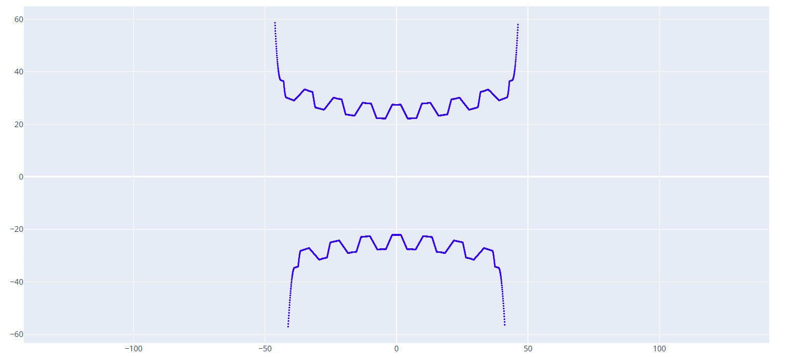

工件轴向截面计算
本功能模块用于计算和生成包络蜗杆在轴向平面上的理论截面轮廓。该轮廓是检验蜗杆齿形是否正确的关键依据，并可用于生成检验模板或进行加工仿真。
输入参数
以下参数是计算蜗杆轴向截面所必需的几何和工艺条件。
1. 中心距 (Center Distance)
- 定义: 蜗杆轴线与配对的蜗轮轴线之间的最短垂直距离。
- 单位: 毫米 (mm)。
- 解释: 这是决定蜗杆蜗轮副基本尺寸和安装位置的核心参数。
- 示例值:
109.3
2. 蜗杆喉部直径 (Worm Throat Diameter)
- 定义: 包络蜗杆的最小直径，位于其中间凹陷的“喉部”。
- 单位: 毫米 (mm)。
- 解释: 这是定义蜗杆基本形状和尺寸的关键参数。
- 示例值:
37.0
3. 蜗轮齿数 (Worm Wheel Teeth Number)
- 定义: 与该蜗杆配对啮合的蜗轮的齿数。
- 单位: 整数。
- 解释: 蜗轮齿数影响传动比和蜗杆齿形的包络形成过程。
- 示例值:
60
4. 砂轮安装倾角 (Grinding Wheel Installation Tilt Angle)
- 定义: 砂轮在机床上的安装倾斜角度。
- 单位: 度 (°)。
- 解释: 为了正确地磨削出包络蜗杆的特殊齿形（环面形状），砂轮需要以特定的角度倾斜安装。这个角度是保证成形精度的关键，错误的设置会导致齿形偏差。
- 示例值:
7.0
5. 砂轮直径 (Grinding Wheel Diameter)
- 定义: 用于磨削加工的砂轮的当前直径。
- 单位: 毫米 (mm)。
- 解释: 软件需要精确的砂轮直径来模拟其表面与工件的接触线，从而计算出正确的截面形状。
- 示例值:
500.0
6. 砂轮分度圆齿顶高 (Grinding Wheel Indexing Circle Addendum)
- 定义: 此参数定义了成形砂轮从其理论分度圆到齿顶（最外边缘）的径向高度。
- 解释: 这是在“高级参数”中也出现过的参数，用于精确描述成形砂轮的几何轮廓。此数据需要和
绘图工具 - 梯形工具中生成齿型时输入的齿顶高一致。 - 示例值:
2.33
7. 蜗杆计算齿数 (Worm Calculation Teeth Number)
- 定义: 模拟计算蜗杆的齿数。
- 单位: 整数。
- 解释: 蜗杆齿越靠两侧越容易产生误差，计算的齿数越多可以更好的对工件进行数据分析。但过多的计算齿数会导致计算时间变长。
- 示例值:
7。
8. 齿型文件地址 (Tooth Profile File Address)
- 定义: 输入一个定义了砂轮截面形状的DXF文件路径。
- 解释: 此处引用的DXF文件（例如上一部分生成的
tixing-20.dxf）定义了砂轮的轴向齿形。软件将使用这个齿形作为“刀具”，来计算它在工件上“切削”出的形状。
9. 保存文件 (Save File)
- 定义: 为计算后生成的工件轴向截面曲线指定保存路径和文件名。
- 解释: 计算结果将作为一个新的DXF文件被保存在此路径下，可用于后续的分析或制图。
操作按钮
1. 生成工件截面曲线 (Generate Workpiece Section Curve)
- 操作: 这是一个执行计算并生成图形文件的按钮。
- 解释: 当所有参数设置完毕后，点击此按钮，软件将：
- 读取“齿型文件地址”中的砂轮轮廓。
- 基于中心距、倾角等所有几何和工艺参数，模拟砂轮的磨削运动。
- 计算出在蜗杆轴向截面上形成的最终齿廓曲线。
- 将该曲线保存为DXF文件到“保存文件”指定的路径。
- 同时会输出蜗杆分度圆上的滚道曲线三维形态图形，用于辅助分析。

2. 计算工件数据 (Calculate Workpiece Data)
- 操作: 这是一个执行数据计算的按钮。
- 解释: 点击此按钮可能不会生成DXF文件，而是会在显示一系列关于工件截面的关键几何数据，例如：
输入数据: a 蜗轮蜗杆中心距: 109.3000 d1 蜗杆分度圆直径: 37.0000 (0.33a ~ 0.38a) z2 蜗轮齿数 : 60 z1 蜗杆头数 : 1 计算数据: i 传动比 : 60.0 (z2 / z1) d2 蜗轮分度圆直径 : 181.6000 (2a - d1) mt 涡轮端面模数 : 3.0267 (d2 / z2) ha 蜗杆齿顶高 : 2.1187 (0.7 * mt) hf 蜗杆齿根高 : 2.7240 (0.9 * mt) h 蜗杆全齿高 : 4.8427 (1.6 * mt) c 齿顶间隙 : 0.6053 (0.2 * mt) r 蜗杆喉部分度圆导程角: 4.6765 (atan(d2 / (i * d1))) t 齿距角 : 6.0000 (360 / z2) db 主基圆直径 : 54.6500 - 73.2310 (0.5a ~ 0.67a) α 涡轮分度圆压力角 : 17.5138 - 23.7818 (asin(db / d2)) pt 涡轮分度圆齿距 : 9.5086 (pi * mt) s2 涡轮分度圆齿厚 : 5.2297 (0.55 * pt) | 4.7543 (0.50 * pt) s1 蜗杆分度圆齿厚 : 4.2788 | 4.7543 | (pt - s2) (不考虑圆周齿侧间隙) sn2 涡轮分度圆法向齿厚 : 5.2123 | 4.7384 | (s2 * cos(r)) sn1 蜗杆分度圆法向齿厚 : 4.2646 | 4.7384 | (s1 * cos(r))